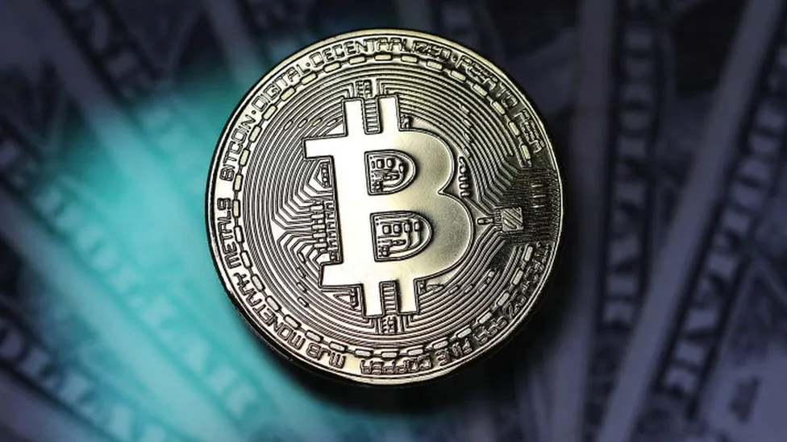

Bitcoin ETF: Cryptocurrency swings as watchdog X account 'compromised'
01.10.2024

By Peter Hoskins
Business reporter
--------
Bitcoin jumped briefly on Tuesday after a post on the US markets regulator's X account (formerly Twitter) said it had approved new so-called exchange-traded funds (ETFs) in the cryptocurrency.
The Securities and Exchange Commission (SEC) later deleted the post and said its account had been "compromised".
The social media platform has said the compromised account was not due to a breach of its systems.
US regulators are expected to make an announcement on the new ETFs this week.
The false post appeared on the SEC's official X account shortly after 16:00 Washington time (21:00 GMT).
It said the regulator "grants approval for #Bitcoin ETFs for listing on all registered national securities exchanges".
The post was immediately picked up and quoted by social media users and business news outlets.
Within minutes the SEC's chair Gary Gensler posted a message refuting the erroneous announcement on his personal X account: "The @SECGov twitter account was compromised, and an unauthorized tweet was posted. The SEC has not approved the listing and trading of spot bitcoin exchange-traded products."
"The SEC has determined that there was unauthorized access to and activity on the @SECGov x.com account by an unknown party for a brief period of time shortly after 4 pm ET," an SEC spokesperson told the BBC.
"That unauthorized access has been terminated," they added. "The SEC will work with law enforcement and our partners across government to investigate the matter and determine appropriate next steps relating to both the unauthorized access and any related misconduct."
Later on Tuesday, X said it had completed a preliminary probe into the false post on the SEC's account and found that it was not due to a breach of the social media platform's systems.
"We can confirm that the account @SECGov was compromised and we have completed a preliminary investigation," X said.
"Based on our investigation, the compromise was not due to any breach of X's systems, but rather due to an unidentified individual obtaining control over a phone number associated with the @SECGov account through a third party," it added.
"We can also confirm that the account did not have two-factor authentication enabled at the time the account was compromised."
Bitcoin jumped to almost $48,000 (£37,800) immediately after the erroneous post before falling back to around $46,000.
Investors are hotly anticipating an SEC announcement on the potential approval of spot bitcoin ETFs, which is expected this week.
It would mark a key milestone for the cryptocurrency market in gaining acceptance to mainstream financial markets.
Several asset management firms have applied for SEC approval for spot Bitcoin ETFs.
ETFs are portfolios that allow investors to bet on multiple assets, without having to buy any themselves.
Traded on stock exchanges like shares, their value depends on how the overall portfolio performs in real time.
Some ETFs already contain Bitcoin indirectly - but a spot Bitcoin ETF will buy the cryptocurrency directly, "on the spot", at its current price, throughout the day.
Related Topics